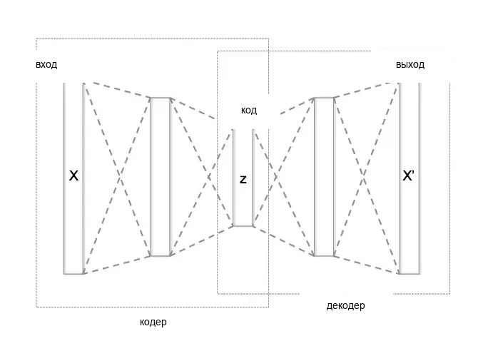
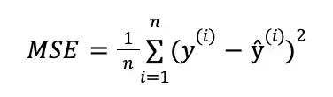

Русский перевод. Неофициальный перевод актуальной документации snnTorch latest (0.9.4). Оригинал: https://snntorch.readthedocs.io/en/latest/. Документация распространяется по лицензии CC BY-SA 3.0.
` <https://github.com/jeshraghian/snntorch/>`__
snnTorch – Спайковый автоэнкодер (SAE) с использованием сверточных спайковых нейронных сетей
Учебное пособие от Alon Loeffler (www.alonloeffler.com)
*Этот учебный материал адаптирован из моей оригинальной статьи, опубликованной на Medium.com
` <https://github.com/jeshraghian/snntorch/>`__ ` <https://github.com/jeshraghian/snntorch/>`__
Для всестороннего обзора того, как работают SNN и что происходит под капотом, тогда вас может заинтересовать серия учебных пособий snnTorch, доступная здесь. Серия учебных пособий snnTorch основана на следующей статье. Если вы считаете эти ресурсы или код полезными для своей работы, пожалуйста, рассмотрите возможность цитирования следующего источника:
В этом учебном пособии вы узнаете, как использовать snnTorch для:
Создайте спайковый автоэнкодер
Восстановите изображения MNIST
Если запускаете в Google Colab:
Вы можете подключиться к GPU, отметив
Runtime>Change runtime type>Hardware accelerator: GPU
1. Автоэнкодеры
Кодировщик принимает входные данные (например, изображение) и отображает их в пространство скрытых переменных меньшей размерности. Например, кодировщик может принимать на вход изображение MNIST размером 28×28 пикселей (всего 784 пикселя) и извлекать важные признаки из изображения, сжимая его до меньшей размерности (например, 32 признака). Это сжатое представление изображения называется скрытое представление.
Декодировщик отображает скрытое представление обратно в исходное входное пространство (т.е. от 32 признаков обратно к 784 пикселям) и пытается восстановить исходное изображение из небольшого количества ключевых признаков.

Цель автоэнкодера — минимизировать ошибку восстановления между входными данными и выходом декодировщика.
Это достигается путем обучения модели минимизировать потери при восстановлении, которые обычно определяются как среднеквадратичная ошибка (MSE) между входными данными и восстановленным выходом.

Автоэнкодеры — отличные инструменты для снижения шума в данных путем выделения только важных частей данных и отбрасывания всего остального в процессе восстановления. Это, по сути, инструмент снижения размерности.
В этом учебном пособии (аналогично пособию 1) мы будем предполагать, что у нас есть некоторые неспайковые входные данные (т.е. набор данных MNIST), и мы хотим закодировать их и восстановить. Итак, приступим!
2. Настройка
2.1 Установка/импорт пакетов и настройка окружения
Для начала нам нужно установить snnTorch и его зависимости (обратите внимание: это пособие предполагает, что у вас уже установлены pytorch и torchvision - они предустановлены в Colab). Это можно сделать, выполнив следующую команду:
!pip install snntorch
Далее импортируем необходимые модули и настроим модель SAE.
Мы можем использовать pyTorch для определения сетей кодировщика и декодировщика, а snnTorch — для преобразования нейронов в сетях в нейроны с утечкой интеграции и возбуждения (LIF), которые принимают и выдают спайки.
Мы будем использовать сверточные нейронные сети (CNN), рассматриваемые в уроке 6, в качестве основы нашего кодировщика и декодировщика.
import os
import torch
import torch.nn as nn
import torch.nn.functional as F
from torchvision import datasets, transforms
from torch.utils.data import DataLoader
from torchvision import utils as utls
import snntorch as snn
from snntorch import utils
from snntorch import surrogate
import numpy as np
#Define the SAE model:
class SAE(nn.Module):
def __init__(self,latent_dim):
super().__init__()
self.latent_dim = latent_dim #dimensions of the encoded z-space data
3. Построение автоэнкодера
3.1 Загрузчики данных
Мы будем использовать набор данных MNIST
# dataloader arguments
batch_size = 250
data_path='/tmp/data/mnist'
dtype = torch.float
device = torch.device("cuda") if torch.cuda.is_available() else torch.device("mps") if torch.backends.mps.is_available() else torch.device("cpu")
# Define a transform
input_size = 32 #for the sake of this tutorial, we will be resizing the original MNIST from 28 to 32
transform = transforms.Compose([
transforms.Resize((input_size, input_size)),
transforms.Grayscale(),
transforms.ToTensor(),
transforms.Normalize((0,), (1,))])
# Load MNIST
# Training data
train_dataset = datasets.MNIST(root='dataset/', train=True, transform=transform, download=True)
train_loader = DataLoader(train_dataset, batch_size=batch_size, shuffle=True)
# Testing data
test_dataset = datasets.MNIST(root='dataset/', train=False, transform=transform, download=True)
test_loader = DataLoader(test_dataset, batch_size=batch_size, shuffle=True)
3.2 Кодировщик
Давайте начнем строить секции нашего автоэнкодера, которые мы медленно объединяем в модель SAE, определенную выше:
Во-первых, давайте добавим энкодер с тремя сверточными слоями
(nn.Conv2d), и один полносвязный линейный выходной слой.
Мы будем использовать ядро размером 3, с дополнением 1 и шагом 2 для гиперпараметров CNN.
Мы также добавляем слой Batch Norm между сверточными слоями. Поскольку мы будем использовать мембранный потенциал нейронов в качестве выходных сигналов от каждого нейрона, нормализация поможет нашему процессу обучения.
#Define the SAE model:
class SAE(nn.Module):
def __init__(self):
super().__init__()
self.latent_dim = latent_dim #dimensions of the encoded z-space data
# Encoder
self.encoder = nn.Sequential(nn.Conv2d(1, 32, 3,padding = 1,stride=2), # Conv Layer 1
nn.BatchNorm2d(32),
snn.Leaky(beta=beta, spike_grad=spike_grad, init_hidden=True,threshold=thresh), #SNN TORCH LIF NEURON
nn.Conv2d(32, 64, 3,padding = 1,stride=2), # Conv Layer 2
nn.BatchNorm2d(64),
snn.Leaky(beta=beta, spike_grad=spike_grad, init_hidden=True,threshold=thresh),
nn.Conv2d(64, 128, 3,padding = 1,stride=2), # Conv Layer 3
nn.BatchNorm2d(128),
snn.Leaky(beta=beta, spike_grad=spike_grad, init_hidden=True,threshold=thresh),
nn.Flatten(start_dim = 1, end_dim = 3), #Flatten convolutional output
nn.Linear(128*4*4, latent_dim), # Fully connected linear layer
snn.Leaky(beta=beta, spike_grad=spike_grad, init_hidden=True, output=True,threshold=thresh)
)
3.3 Декодер
Прежде чем написать декодер, требуется еще один небольшой шаг. При декодировании данных из скрытого z-пространства нам нужно перейти от сжатого закодированного представления (latent_dim) обратно к тензорному представлению для использования в транспонированной свертке.
Для этого нам нужно запустить дополнительный полносвязный линейный слой, преобразующий данные обратно в тензор размером 128 x 4 x 4.
#Define the SAE model:
class SAE(nn.Module):
def __init__(self,latent_dim):
super().__init__()
self.latent_dim = latent_dim #dimensions of the encoded z-space data
# Encoder
self.encoder = nn.Sequential(nn.Conv2d(1, 32, 3,padding = 1,stride=2), # Conv Layer 1
nn.BatchNorm2d(32),
snn.Leaky(beta=beta, spike_grad=spike_grad, init_hidden=True,threshold=thresh), #SNN TORCH LIF NEURON
nn.Conv2d(32, 64, 3,padding = 1,stride=2), # Conv Layer 2
nn.BatchNorm2d(64),
snn.Leaky(beta=beta, spike_grad=spike_grad, init_hidden=True,threshold=thresh),
nn.Conv2d(64, 128, 3,padding = 1,stride=2), # Conv Layer 3
nn.BatchNorm2d(128),
snn.Leaky(beta=beta, spike_grad=spike_grad, init_hidden=True,threshold=thresh),
nn.Flatten(start_dim = 1, end_dim = 3), #Flatten convolutional output
nn.Linear(128*4*4, latent_dim), # Fully connected linear layer
snn.Leaky(beta=beta, spike_grad=spike_grad, init_hidden=True, output=True,threshold=thresh)
)
# From latent back to tensor for convolution
self.linearNet= nn.Sequential(nn.Linear(latent_dim,128*4*4),
snn.Leaky(beta=beta, spike_grad=spike_grad, init_hidden=True, output=True,threshold=thresh))
Теперь мы можем написать декодер с тремя транспонированными сверточными
(nn.ConvTranspose2d) слоями и одним линейным выходным слоем. Хотя
мы преобразовали скрытые данные обратно в тензорную форму для свертки,
нам все еще нужно выполнить Unflatten в тензор размером 128 x 4 x 4, так как
входные данные сети являются одномерными. Это делается с помощью
nn.Unflatten в первой строке Декодера.
#Define the SAE model:
class SAE(nn.Module):
def __init__(self,latent_dim):
super().__init__()
self.latent_dim = latent_dim #dimensions of the encoded z-space data
# Encoder
self.encoder = nn.Sequential(nn.Conv2d(1, 32, 3,padding = 1,stride=2), # Conv Layer 1
nn.BatchNorm2d(32),
snn.Leaky(beta=beta, spike_grad=spike_grad, init_hidden=True,threshold=thresh), #SNN TORCH LIF NEURON
nn.Conv2d(32, 64, 3,padding = 1,stride=2), # Conv Layer 2
nn.BatchNorm2d(64),
snn.Leaky(beta=beta, spike_grad=spike_grad, init_hidden=True,threshold=thresh),
nn.Conv2d(64, 128, 3,padding = 1,stride=2), # Conv Layer 3
nn.BatchNorm2d(128),
snn.Leaky(beta=beta, spike_grad=spike_grad, init_hidden=True,threshold=thresh),
nn.Flatten(start_dim = 1, end_dim = 3), #Flatten convolutional output
nn.Linear(128*4*4, latent_dim), # Fully connected linear layer
snn.Leaky(beta=beta, spike_grad=spike_grad, init_hidden=True, output=True,threshold=thresh)
)
# From latent back to tensor for convolution
self.linearNet = nn.Sequential(nn.Linear(latent_dim,128*4*4),
snn.Leaky(beta=beta, spike_grad=spike_grad, init_hidden=True, output=True,threshold=thresh))
# Decoder
self.decoder = nn.Sequential(nn.Unflatten(1,(128,4,4)), #Unflatten data from 1 dim to tensor of 128 x 4 x 4
snn.Leaky(beta=beta, spike_grad=spike_grad, init_hidden=True,threshold=thresh),
nn.ConvTranspose2d(128, 64, 3,padding = 1,stride=(2,2),output_padding=1),
nn.BatchNorm2d(64),
snn.Leaky(beta=beta, spike_grad=spike_grad, init_hidden=True,threshold=thresh),
nn.ConvTranspose2d(64, 32, 3,padding = 1,stride=(2,2),output_padding=1),
nn.BatchNorm2d(32),
snn.Leaky(beta=beta, spike_grad=spike_grad, init_hidden=True,threshold=thresh),
nn.ConvTranspose2d(32, 1, 3,padding = 1,stride=(2,2),output_padding=1),
snn.Leaky(beta=beta, spike_grad=spike_grad, init_hidden=True,output=True,threshold=20000) #make large so membrane can be trained
)
Одна важная вещь, которую следует отметить, — это в последнем слое Leaky наш порог
спайка (thresh) установлен чрезвычайно высоким. Это отличный трюк в
snnTorch, который позволяет мембране нейрона в конечном слое
постоянно обновляться, никогда не достигая порога спайка.
Выход каждого нейрона Leaky будет состоять из тензора спайков (0 или 1) и тензора мембранного потенциала нейрона (отрицательные или положительные действительные числа). snnTorch позволяет нам использовать либо спайки, либо мембранный потенциал каждого нейрона при обучении. Мы будем использовать выходной мембранный потенциал из последнего слоя для реконструкции изображения.
3.4 Функция прямого распространения
Наконец, давайте напишем функции forward, encode и decode, прежде чем собирать все вместе
def forward(self, x):
utils.reset(self.encoder) #need to reset the hidden states of LIF
utils.reset(self.decoder)
utils.reset(self.linearNet)
#encode
spk_mem=[];spk_rec=[];encoded_x=[]
for step in range(num_steps): #for t in time
spk_x,mem_x=self.encode(x) #Output spike trains and neuron membrane states
spk_rec.append(spk_x)
spk_mem.append(mem_x)
spk_rec=torch.stack(spk_rec,dim=2) # stack spikes in second tensor dimension
spk_mem=torch.stack(spk_mem,dim=2) # stack membranes in second tensor dimension
#decode
spk_mem2=[];spk_rec2=[];decoded_x=[]
for step in range(num_steps): #for t in time
x_recon,x_mem_recon=self.decode(spk_rec[...,step])
spk_rec2.append(x_recon)
spk_mem2.append(x_mem_recon)
spk_rec2=torch.stack(spk_rec2,dim=4)
spk_mem2=torch.stack(spk_mem2,dim=4)
out = spk_mem2[:,:,:,:,-1] #return the membrane potential of the output neuron at t = -1 (last t)
return out
def encode(self,x):
spk_latent_x,mem_latent_x=self.encoder(x)
return spk_latent_x,mem_latent_x
def decode(self,x):
spk_x,mem_x = self.latentToConv(x) #convert latent dimension back to total size of features in encoder final layer
spk_x2,mem_x2=self.decoder(spk_x)
return spk_x2,mem_x2
Здесь есть несколько ключевых моментов, на которые стоит обратить внимание:
1) В начале каждого вызова нашей функции forward нам нужно
сбросить скрытые веса каждого нейрона LIF. Если мы этого не сделаем, мы
получим странные ошибки градиента от pytorch при попытке обратного распространения.
Для этого мы используем utils.reset.
2) В функции forward, когда мы вызываем функции encode и decode,
мы делаем это в цикле. Это связано с тем, что мы преобразуем
статичные изображения в последовательности спайков, как объяснялось ранее. Последовательности
спайков требуют времени t, в течение которого может происходить или не происходить спайкинг.
Поэтому мы кодируем и декодируем исходное изображение \(t\) (или
num_steps) раз, чтобы создать скрытое представление, \(z\).
Например, преобразование образца цифры 7 из набора данных MNIST в последовательность спайков с размером скрытого пространства 32 и t = 50 может выглядеть так: Spike-Train образца MNIST цифры 7 после кодирования. Другие экземпляры 7 будут иметь немного разные последовательности спайков, а другие цифры будут иметь еще более отличающиеся последовательности спайков.
3.5 Собираем все вместе:
Наш окончательный полный класс SAE должен выглядеть так:
class SAE(nn.Module):
def __init__(self):
super().__init__()
#Encoder
self.encoder = nn.Sequential(nn.Conv2d(1, 32, 3,padding = 1,stride=2),
nn.BatchNorm2d(32),
snn.Leaky(beta=beta, spike_grad=spike_grad, init_hidden=True,threshold=thresh),
nn.Conv2d(32, 64, 3,padding = 1,stride=2),
nn.BatchNorm2d(64),
snn.Leaky(beta=beta, spike_grad=spike_grad, init_hidden=True,threshold=thresh),
nn.Conv2d(64, 128, 3,padding = 1,stride=2),
nn.BatchNorm2d(128),
snn.Leaky(beta=beta, spike_grad=spike_grad, init_hidden=True,threshold=thresh),
nn.Flatten(start_dim = 1, end_dim = 3),
nn.Linear(2048, latent_dim), #this needs to be the final layer output size (channels * pixels * pixels)
snn.Leaky(beta=beta, spike_grad=spike_grad, init_hidden=True, output=True,threshold=thresh)
)
# From latent back to tensor for convolution
self.linearNet= nn.Sequential(nn.Linear(latent_dim,128*4*4),
snn.Leaky(beta=beta, spike_grad=spike_grad, init_hidden=True, output=True,threshold=thresh)) #Decoder
self.decoder = nn.Sequential(nn.Unflatten(1,(128,4,4)),
snn.Leaky(beta=beta, spike_grad=spike_grad, init_hidden=True,threshold=thresh),
nn.ConvTranspose2d(128, 64, 3,padding = 1,stride=(2,2),output_padding=1),
nn.BatchNorm2d(64),
snn.Leaky(beta=beta, spike_grad=spike_grad, init_hidden=True,threshold=thresh),
nn.ConvTranspose2d(64, 32, 3,padding = 1,stride=(2,2),output_padding=1),
nn.BatchNorm2d(32),
snn.Leaky(beta=beta, spike_grad=spike_grad, init_hidden=True,threshold=thresh),
nn.ConvTranspose2d(32, 1, 3,padding = 1,stride=(2,2),output_padding=1),
snn.Leaky(beta=beta, spike_grad=spike_grad, init_hidden=True,output=True,threshold=20000) #make large so membrane can be trained
)
def forward(self, x): #Dimensions: [Batch,Channels,Width,Length]
utils.reset(self.encoder) #need to reset the hidden states of LIF
utils.reset(self.decoder)
utils.reset(self.linearNet)
#encode
spk_mem=[];spk_rec=[];encoded_x=[]
for step in range(num_steps): #for t in time
spk_x,mem_x=self.encode(x) #Output spike trains and neuron membrane states
spk_rec.append(spk_x)
spk_mem.append(mem_x)
spk_rec=torch.stack(spk_rec,dim=2)
spk_mem=torch.stack(spk_mem,dim=2) #Dimensions:[Batch,Channels,Width,Length, Time]
#decode
spk_mem2=[];spk_rec2=[];decoded_x=[]
for step in range(num_steps): #for t in time
x_recon,x_mem_recon=self.decode(spk_rec[...,step])
spk_rec2.append(x_recon)
spk_mem2.append(x_mem_recon)
spk_rec2=torch.stack(spk_rec2,dim=4)
spk_mem2=torch.stack(spk_mem2,dim=4)#Dimensions:[Batch,Channels,Width,Length, Time]
out = spk_mem2[:,:,:,:,-1] #return the membrane potential of the output neuron at t = -1 (last t)
return out #Dimensions:[Batch,Channels,Width,Length]
def encode(self,x):
spk_latent_x,mem_latent_x=self.encoder(x)
return spk_latent_x,mem_latent_x
def decode(self,x):
spk_x,mem_x = self.linearNet(x) #convert latent dimension back to total size of features in encoder final layer
spk_x2,mem_x2=self.decoder(spk_x)
return spk_x2,mem_x2
4. Обучение и тестирование
Наконец, мы можем перейти к обучению нашего SAE и тестированию его полезности. Мы уже загрузили набор данных MNIST и разделили его на классы обучения и тестирования.
4.1 Функция обучения
Мы определяем функцию обучения, которая принимает на вход модель сети, обучающий набор данных, оптимизатор и номер эпохи и возвращает значение потерь после обработки всех батчей текущей эпохи.
Как уже обсуждалось в начале, мы будем использовать MSE-функцию потерь для сравнения
восстановленного изображения (x_recon) с исходным изображением
(real_img)
Как всегда, для настройки градиентов для обратного распространения мы используем
opti.zero_grad(), а затем вызываем loss_val.backward() и
opti.step() для выполнения обратного распространения.
#Training
def train(network, trainloader, opti, epoch):
network=network.train()
train_loss_hist=[]
for batch_idx, (real_img, labels) in enumerate(trainloader):
opti.zero_grad()
real_img = real_img.to(device)
labels = labels.to(device)
#Pass data into network, and return reconstructed image from Membrane Potential at t = -1
x_recon = network(real_img) #Dimensions passed in: [Batch_size,Input_size,Image_Width,Image_Length]
#Calculate loss
loss_val = F.mse_loss(x_recon, real_img)
print(f'Train[{epoch}/{max_epoch}][{batch_idx}/{len(trainloader)}] Loss: {loss_val.item()}')
loss_val.backward()
opti.step()
#Save reconstructed images every at the end of the epoch
if batch_idx == len(trainloader)-1:
# NOTE: you need to create training/ and testing/ folders in your chosen path
utls.save_image((real_img+1)/2, f'figures/training/epoch{epoch}_finalbatch_inputs.png')
utls.save_image((x_recon+1)/2, f'figures/training/epoch{epoch}_finalbatch_recon.png')
return loss_val
4.2 Функция тестирования
Функция тестирования почти идентична функции обучения,
за исключением того, что мы не выполняем обратного распространения, поэтому градиенты не требуются
и мы используем torch.no_grad()
#Testing
def test(network, testloader, opti, epoch):
network=network.eval()
test_loss_hist=[]
with torch.no_grad(): #no gradient this time
for batch_idx, (real_img, labels) in enumerate(testloader):
real_img = real_img.to(device)#
labels = labels.to(device)
x_recon = network(real_img)
loss_val = F.mse_loss(x_recon, real_img)
print(f'Test[{epoch}/{max_epoch}][{batch_idx}/{len(testloader)}] Loss: {loss_val.item()}')#, RECONS: {recons_meter.avg}, DISTANCE: {dist_meter.avg}')
if batch_idx == len(testloader)-1:
utls.save_image((real_img+1)/2, f'figures/testing/epoch{epoch}_finalbatch_inputs.png')
utls.save_image((x_recon+1)/2, f'figures/testing/epoch{epoch}_finalbatch_recons.png')
return loss_val
Существует несколько способов вычисления потерь в спайковых нейронных сетях. Здесь мы просто берем мембранный потенциал последнего полносвязного слоя нейронов на последнем временном шаге (\(t = 5\)).
Поэтому нам нужно сравнивать каждое исходное изображение с его соответствующим декодированным восстановленным изображением только один раз за эпоху. Мы также можем возвращать мембранные потенциалы на каждом временном шаге и создавать t различных версий восстановленного изображения, а затем сравнивать каждую из них с исходным изображением и вычислять средние потери. Для тех, кто заинтересован в этом, вы можете заменить вышеуказанную функцию потерь на что-то вроде этого:
(обратите внимание, что это не будет работать, так как мы еще не определили никаких переменных, это приведено только для иллюстрации)
train_loss_hist=[]
loss_val = torch.zeros((1), dtype=dtype, device=device)
for step in range(num_steps):
loss_val += F.mse_loss(x_recon, real_img)
train_loss_hist.append(loss_val.item())
avg_loss=loss_val/num_steps
---------------------------------------------------------------------------
NameError Traceback (most recent call last)
Cell In[72], line 4
2 loss_val = torch.zeros((1), dtype=dtype, device=device)
3 for step in range(num_steps):
----> 4 loss_val += F.mse_loss(x_recon, real_img)
5 train_loss_hist.append(loss_val.item())
6 avg_loss=loss_val/num_steps
NameError: name 'x_recon' is not defined
5. Заключение: Запуск SAE
Теперь, наконец, мы можем запустить нашу модель SAE. Давайте определим некоторые параметры, и выполним обучение и тестирование
Давайте создадим каталоги, в которых мы будем сохранять наши исходные и восстановленные изображения для обучения и тестирования:
# create training/ and testing/ folders in your chosen path
if not os.path.isdir('figures/training'):
os.makedirs('figures/training')
if not os.path.isdir('figures/testing'):
os.makedirs('figures/testing')
# dataloader arguments
batch_size = 250
input_size = 32 #resize of mnist data (optional)
#setup GPU
dtype = torch.float
device = torch.device("cuda") if torch.cuda.is_available() else torch.device("cpu")
# neuron and simulation parameters
spike_grad = surrogate.atan(alpha=2.0)# alternate surrogate gradient fast_sigmoid(slope=25)
beta = 0.5 #decay rate of neurons
num_steps=5
latent_dim = 32 #dimension of latent layer (how compressed we want the information)
thresh=1#spiking threshold (lower = more spikes are let through)
epochs=10
max_epoch=epochs
#Define Network and optimizer
net=SAE()
net = net.to(device)
optimizer = torch.optim.AdamW(net.parameters(),
lr=0.0001,
betas=(0.9, 0.999),
weight_decay=0.001)
#Run training and testing
for e in range(epochs):
train_loss = train(net, train_loader, optimizer, e)
test_loss = test(net,test_loader,optimizer,e)
Train[0/10][0/240] Loss: 0.10109379142522812
Train[0/10][1/240] Loss: 0.10465191304683685
KeyboardInterrupt
Всего через 10 эпох потери обучения и тестирования на восстановление должны быть около 0.05, а восстановленные изображения должны выглядеть примерно так:
Да, восстановленные изображения немного размыты, и потери не идеальны, но с учетом всего лишь 10 эпох и использования только окончательного мембранного потенциала на \(t = 5\) для наших потерь при восстановлении, это довольно неплохое начало!
Попробуйте увеличить количество эпох или поиграть с
thresh, num_steps и batch_size чтобы посмотреть, сможете ли вы получить
лучшие потери!